S2IGAN
Speech-to-Image Generation via Adversarial Learning

Introduction
An estimated half of the world’s languages do not have a written form, making it impossible for these languages to benefit from any existing text-based technologies. In this project, a speech-to-image generation (S2IG) framework is proposed which translates speech descriptions to photo-realistic images without using any text information, thus allowing unwritten languages to potentially benefit from this technology. The proposed S2IG framework, named S2IGAN, consists of a speech embedding network (SEN) and a relation-supervised densely-stacked generative model (RDG). SEN learns the speech embedding with the supervision of the corresponding visual information. Conditioned on the speech embedding produced by SEN, the proposed RDG synthesizes images that are semantically consistent with the corresponding speech descriptions.Model structure
Speech Embedding Network (SEN)
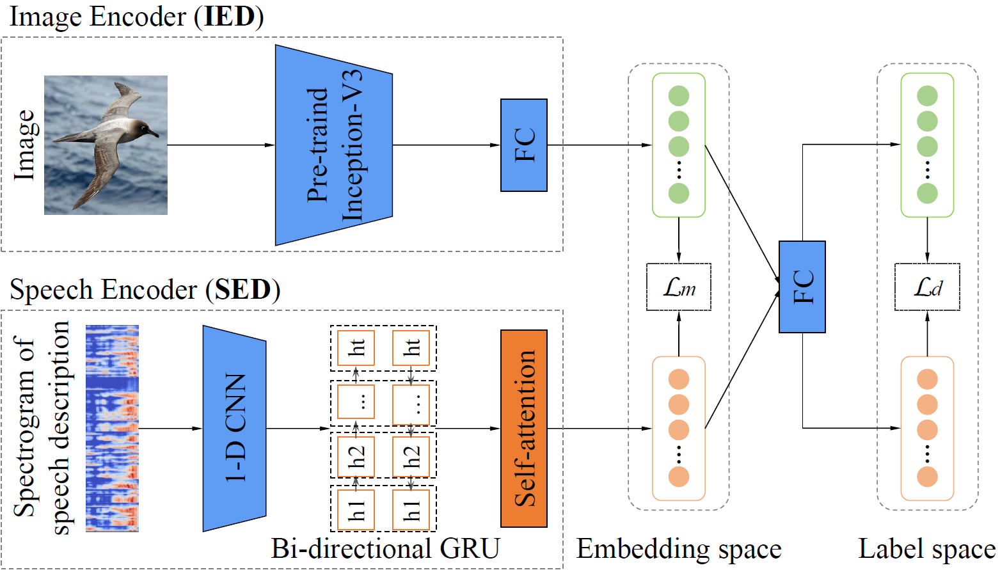
Given an image-speech pair, SEN tries to find a common space for both modalities, so that we can minimize the modality gap and obtain visually-grounded speech embeddings. As shown in the Figure, SEN is a dual encoder framework, including an image encoder and a speech encoder.
The image encoder (IED) adopts the Inception-v3 pre-trained on ImageNet to extract visual features. On top of it, a single-layer linear layer is employed to convert the visual feature to a common space of visual and speech embeddings.
The speech encoder (SED) consists of a two-layer 1-D convolution block, two bi-directional gated recurrent units (GRU) and a self-attention layer. The 1-D convolutional block consisted of two 1-D convolutional layers with 40 input, 64 hidden and 128 output channels. The size of the hidden layer of the bi-directional GRU was 512 and the size of the output was 1024 by concatenating the bidirectional representations.
Relation-supervised Densely-stacked Generative Model (RDG)

Results
Comparison
|
Ground Truth
StackGAN-v2 (T2IG)
StackGAN-v2 (S2IG)
S2IGAN (S2IG)
|
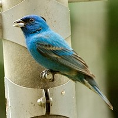 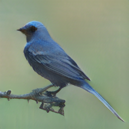 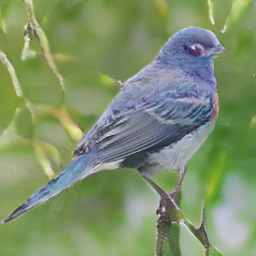 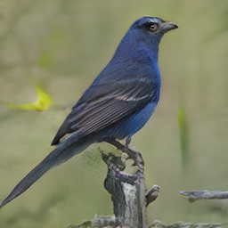 |
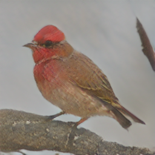 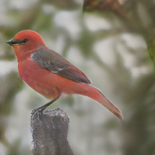 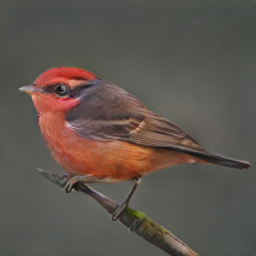 |
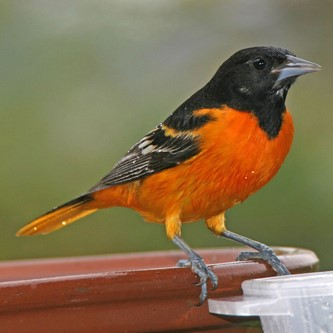 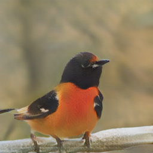 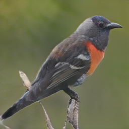 |
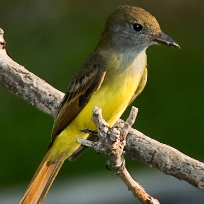 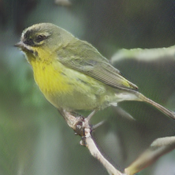 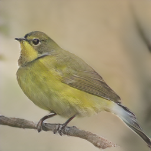 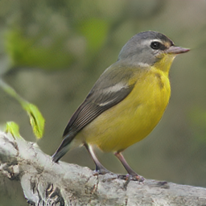 |
|
Ground Truth
StackGAN-v2 (T2IG)
StackGAN-v2 (S2IG)
S2IGAN (S2IG)
|
Ability to catch subtle semantic differences
The following images were generated by S2IGAN conditioned on speech descriptions that have subtle differences.|
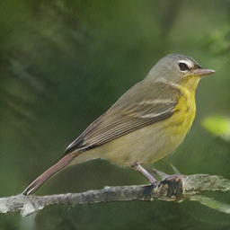 |
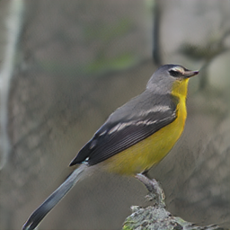 |
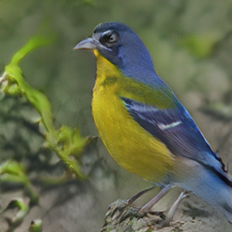 |
|
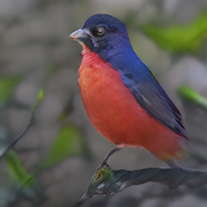 |
|
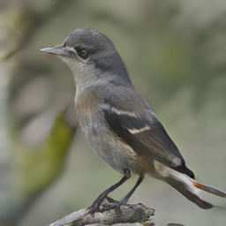 |
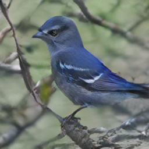 |
Component analysis
Effect of densely-stacked structure of DG We evaluated the effect of the densely-stacked structures by changing it with the traditional stacked structures as in StackGAN-v2 (see S2IGAN w/o Dense in Table 1). Comparing the results to S2IGAN, S2IGAN w/o Dense shows a performance drop for most evaluation metrics, see $e.g.,$ the decrease in mAP for both the CUB and the Oxford-102 datasets. These results confirm the effectiveness of the proposed densely-stacked structure for image generation.
Effect of RS The effect of the relation supervisor on training the generators can be observed by comparing the performances of S2IGAN and S2IGAN w/o RS. The results show that the RS module leads to improvements in both mAP and FID for both datasets, $e.g.$, RS increases the mAP from 12.86 to 13.40 and decreases the FID from 53.24 to 48.64 on the Oxford-102 dataset. These results indicate the effectiveness of RS on ensuring the semantic consistency of the synthesized images with the corresponding speech descriptions.
Effect of SEN The effect of SEN on our S2IGAN is investigated by comparing S2IGAN with S2IGAN w/o SEN. When the speech encoder (SED) was not pre-trained in SEN, the generation model (S2IGAN w/o SEN) shows a much worse performance, $e.g.,$ without SEN, mAP drops from 9.04 to 2.91 on the CUB dataset. Finally, we conducted an experiment to train S2IGAN in an end-to-end manner, however, the performance did not show an improvement (S2IGAN end-to-end). These results show the importance of the pre-learned speech embedding provided by SEN.
| Dataset | CUB (Bird) | Oxford-102 (Flower) | ||||
|---|---|---|---|---|---|---|
| Evaluation Metric |
mAP | FID | IS | mAP | FID | IS |
| S2IGAN w/o Dense |
8.66 | 17.58 | 4.19 | 13.13 | 64.37 | 3.68 ± 0.05 |
| S2IGAN w/o RS | 8.54 | 15.59 | 4.14 | 12.86 | 53.24 | 3.70 ± 0.08 |
| S2IGAN w/o SEN | 2.91 | 19.56 | 3.49 | 7.38 | 67.60 | 2.77 ± 0.04 |
| S2IGAN end-to-end | 7.38 | 21.54 | 4.29 | 12.47 | 51.88 | 3.55 ± 0.08 |
| S2IGAN | 9.04 | 14.50 | 4.29 | 13.40 | 48.64 | 3.55 ± 0.04 |
Effect of the distinctive loss in SEN We investigated the effect of the distinctive loss $\mathcal{L}_d$ for training SEN. The results are shown in Table 2. As can be seen, SEN without using $\mathcal{L}_d$ for training shows a performance drop in terms of mAP on both datasets. Importantly, a better performance of SEN always led to an increase in the performance of S2IGAN, showing the importance of learning a good speech embedding for the task of image generation.
| Dataset | Ld | SEN | S2IGAN | ||
|---|---|---|---|---|---|
| mAP | mAP | FID | IS | ||
| CUB (Bird) | w/o | 23.68 | 6.80 | 16.66 | 4.19 ± 0.05 |
| w/ | 24.24 | 9.04 | 14.50 | 4.29 ± 0.04 | |
| Oxford-102 (Flower) | w/o | 41.85 | 10.03 | 69.47 | 3.35 ± 0.08 |
| w/ | 41.86 | 13.40 | 48.64 | 3.55 ± 0.08 | |
To better understand the role of the loss function, we visualized the speech feature distributions produced by SEN trained with and without $\mathcal{L}_d$ using t-SNE. It shows that the use of $\mathcal{L}_d$ increases the distance between different classes, which is important to create semantic-discriminative speech embeddings, $e.g.,$ after training SEN using $\mathcal{L}_d$, class 112 was no longer mixed with other classes. So, both the objective results and the visualization show that $\mathcal{L}_d$ is critical for learning better speech embeddings, which further helps S2IGAN to generate better semantically-consistent images.